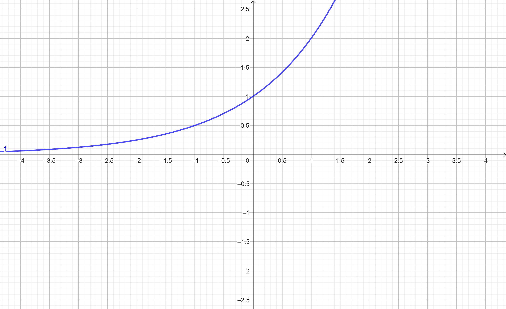

As funções exponenciais são muito comuns de serem utilizadas para taxar o crescimento ou redução de algo, exemplo, crescimento de uma doença contagiosa, redução/tamanho da população, dentre outros.
Assistimos esse vídeo e logo fizemos um exercício sobre CRESCIMENTO POPULACIONAL.
A principal forma de multiplicação das bactérias é a divisão binária, ou seja, a bactéria de divide ao meio, originando duas novas bactérias idênticas a ela. Sabendo que uma colônia, iniciada por uma única bactéria, duplica a cada 20 minutos, quantas bactérias existirão após 2 horas e 40 minutos?
| tempo | número de bactérias |
| 0 | 1 |
| 1 | 2 |
| 2 | 4 |
| 3 | 8 |
| 4 | 16 |
| 5 | 32 |
| 6 | 64 |
| 7 | 128 |
| 8 | 256 |
Assim com a tabela é muito mais prático de resolver o problema, então terão 256 bactérias após 2hr e 40min.
Domínio são os Reais.
Para contruir um gráfico exponencial temos que aplicar valores e entender que a reta vai ser uma curva que não encostará no eixo de X, pois A sempre será maior do que zero.
Veja o exemplo:
| X | Y |
| -2 | 5/4 |
| -1 | 1/2 |
| 0 | 1 |
| 1 | 2 |
| 2 | 4 |
Analise o gráfico a seguir:
Precisamos resolver equações exponenciais poque em alguns casos o X fica no expoente e precisamos trabalhar com isso para encontrar o valor de X.
Por exemplo: eu tenho a equação
Eu sigo os passos e começo isolando a base
Eu decomponho o 32 que em sua potência é 2^5
Agora com as bases igualadas eu corto elas e fico com o resultado de X.
Veja a seguir um exemplo de exercício feito em aula.
Invertemos os números da equação e ficamos com apenas uma base com expoente.
Assim eu passei o 5 dividindo e depois eu decompusera o resultado da divisão que foi 343, percebe-se que é o mesmo que 7^3.
Logo ficamos com as bases igualadas e só a eliminamos, assim nos restou apenas os expoentes x+3=3.
Passamos o três para o outro lado subtraindo e assim obtivemos o resultado x=0.